איך זה עובד?
חלק א׳ – פתיחת מרחב כיתתי
1 כניסה למערכת
היכנסו לפורטל בית הספר הווירטואלי ובצעו התחברות באמצעות הזדהות משרד החינוך.
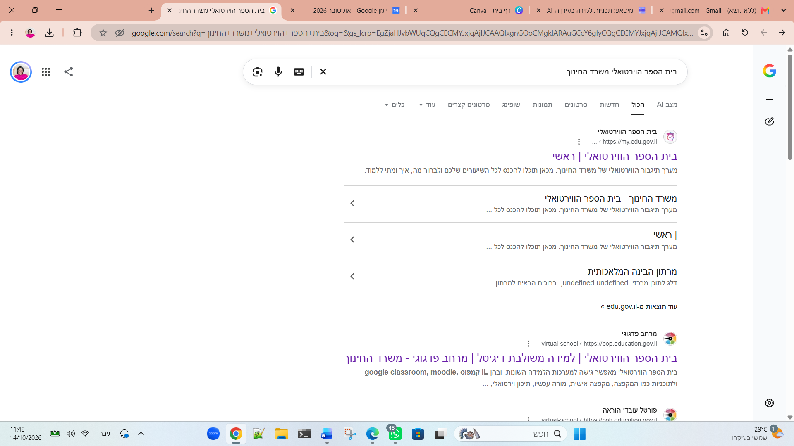
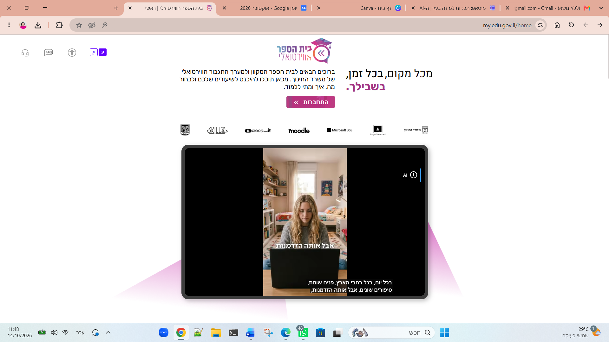
2 מודל על-יסודי
במסך הראשי, חפשו את קוביית "קיצורי דרך" ולחצו על הכפתור למעבר למודל על-יסודי.
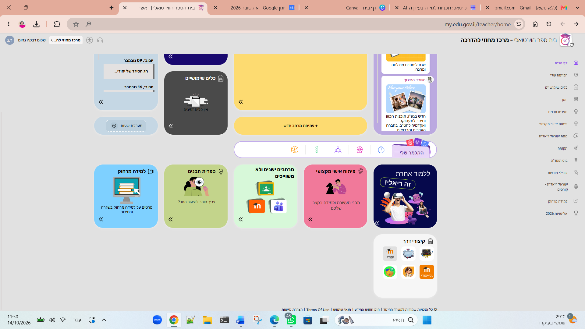

3 יצירת מרחב חדש
לחצו על אפשרות יצירת המרחב ולאחר מכן בחרו באפשרות "פיתוח תכנים במרחב למידה ריק".
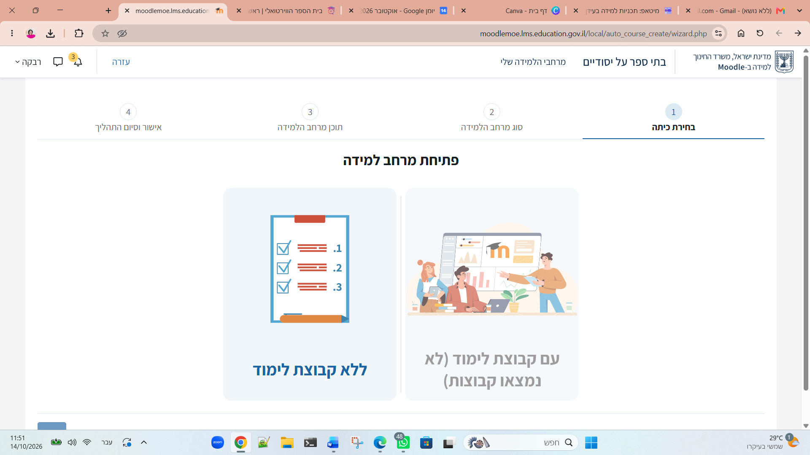
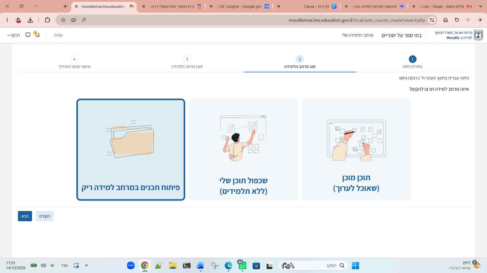
4 הגדרת כיתה
מלאו את פרטי בית הספר, המקצוע, שכבת הגיל ומספר הכיתה, ולחצו על "הבא" לאישור ההקמה.
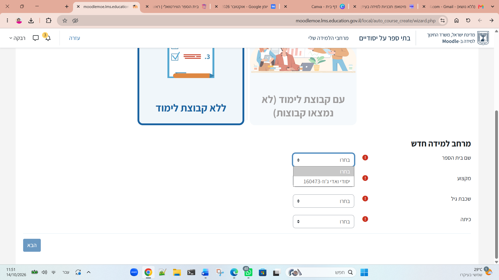
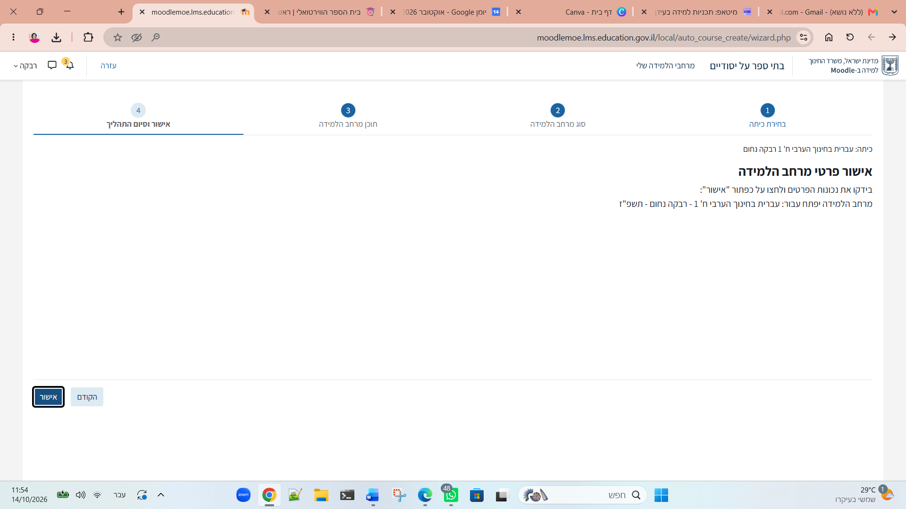
חלק ב׳ – ייבוא חומרי התוכנית
1 שימוש חוזר בתכנים
היכנסו למרחב הריק שיצרתם. בתפריט העליון תחת "אפשרויות נוספות", בחרו ב-"שימוש חוזר בתכנים".
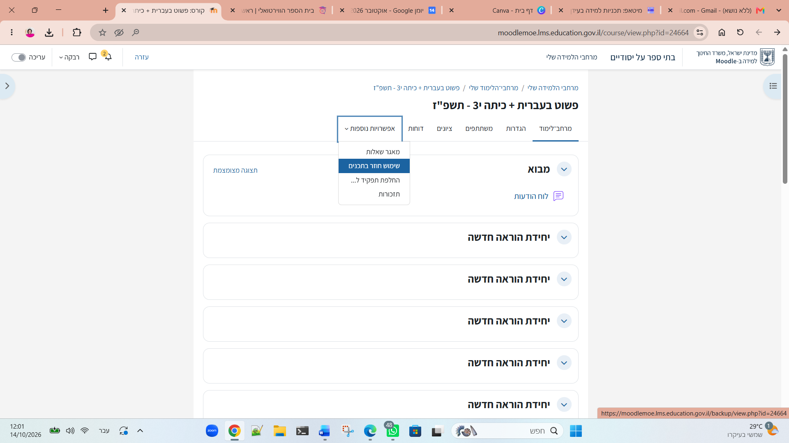
2 ייבוא החומרים
בחרו בייבוא מתוך הסביבה של "פשוט בעברית - מרחב לשכפול". לחצו "הבא" עד לסיום פעולת הייבוא כדי לראות את כל התכנים במרחב הכיתתי שלכם.
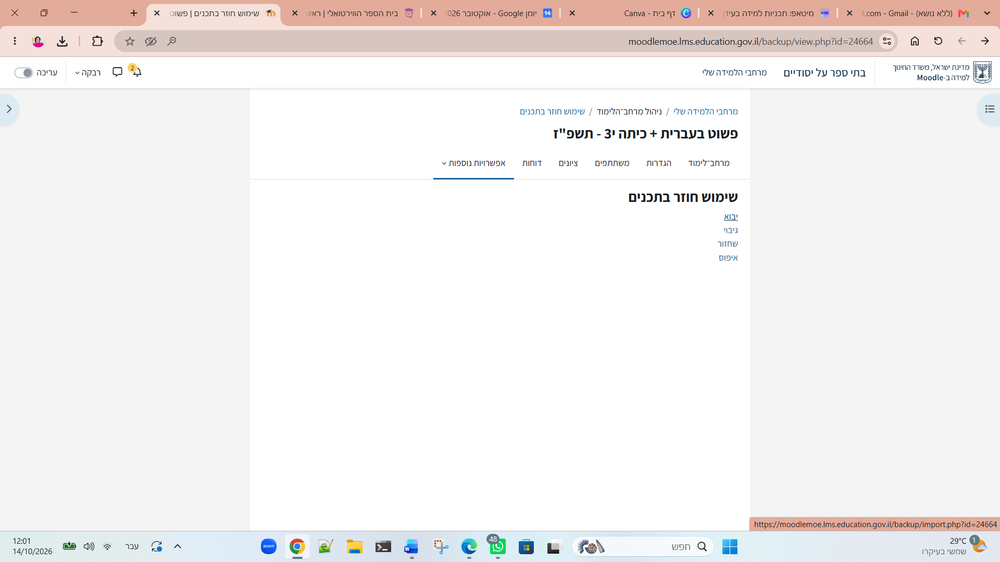
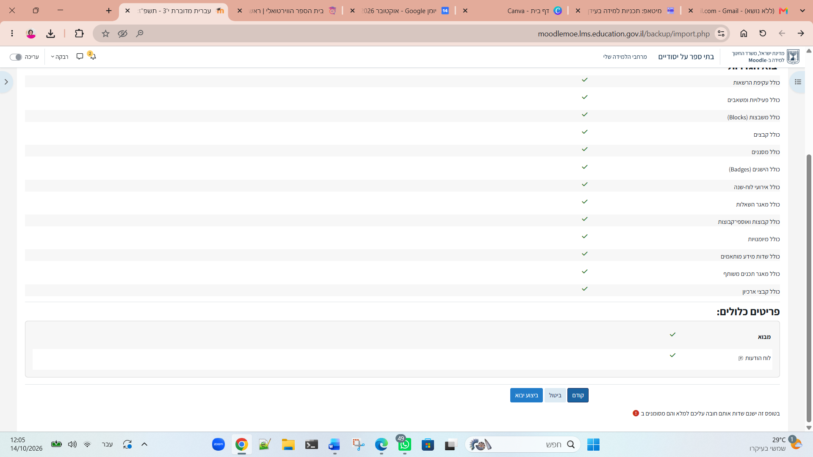
חלק ג׳ – נראות המרחב
1 שם ותמונת באנר
במסך הגדרות המרחב, ודאו ששם התוכנית מעודכן כראוי. לאחר מכן, גללו למטה והעלו את תמונת הבאנר הרשמית של התוכנית כדי לשמור על שפה אחידה.
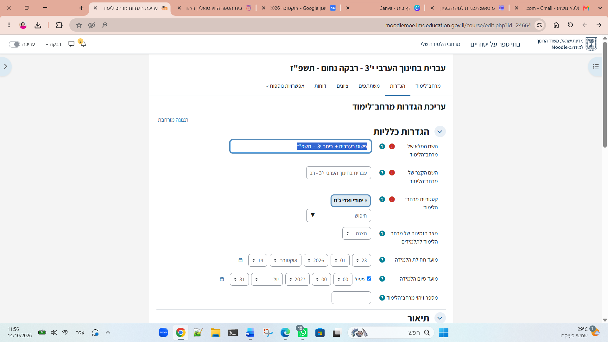
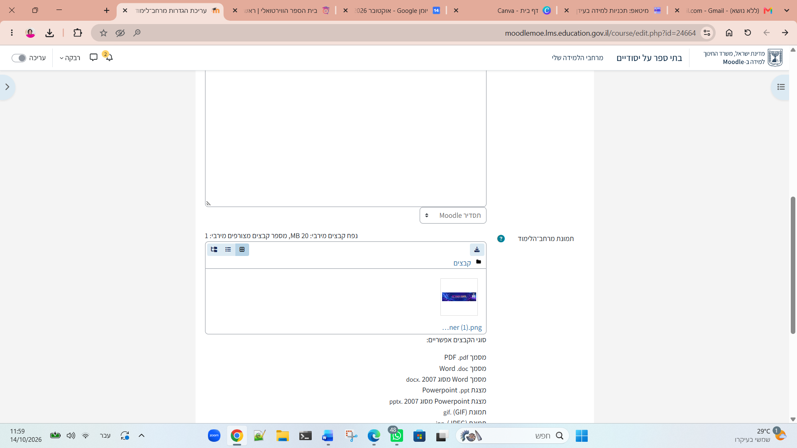
רגע לפני שמתחילים, ודאו ש:
- ✔ נפתח מרחב נפרד לכל כיתה
- ✔ חומרי התוכנית יובאו בהצלחה למרחב החדש
- ✔ הוגדר שיוך עצמי לתלמידים דרך תפריט משתתפים
- ✔ קישור ההצטרפות נשלח לתלמידי הכיתה